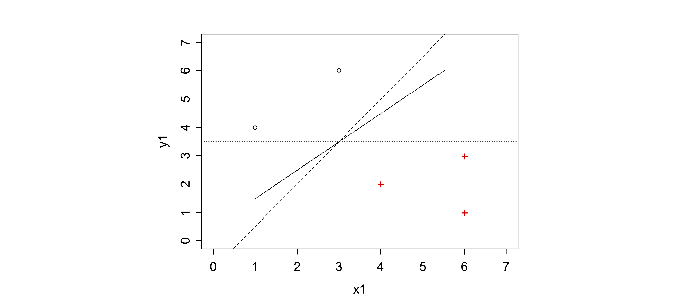
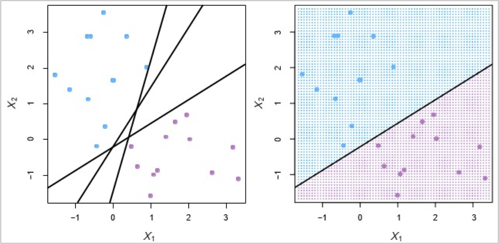

Fundamentals of
Data Analytics and
Predictions
SVM
Xi (Rossi) LUO
Department of Biostatistics and Data Science
School of Public Health
The University of Texas Health Science Center at Houston
Linear Separator—1
Linear Separator—2
Linear Separator—3
Support Vector Machines
- Here we approach the two-class classification problem in a direct way:
- We try and find a plane that separates the classes in feature space
- If we cannot, we get creative in two ways:
- We soften what we mean by “separates”, and
- We enrich and enlarge the feature space so that separation is possible
What is a Hyperplane?
- A hyperplane in p dimensions is a flat affine subspace of dimension p − 1
- In general the equation for a hyperplane has the form $\beta_0+\beta_1X_1+\beta_2X_2+...\beta_pX_p=0$
- In p = 2 dimensions a hyperplane is a line
- If $\beta_0$=0, the hyperplane goes through the origin
- The vector $\beta$=($\beta_1,\beta_2...\beta_p$) is called the normal vector
- It points in a direction orthogonal to the surface of a hyperplane
Hyperplane in 2 Dimensions

Separating Hyperplanes
- If $f(x)=\beta_0+\beta_1X_1+\beta_2X_2+...\beta_pX_p$, then $f(X) \gt 0$ for points on one side of the hyperplane, and $f(X) \lt 0$ for points on the other
- If we code the colored points as $Y_i=+1$ for blue, say, and $Y_i=−1$ for mauve, then if $Y_i∙f(ùëã)\gt 0$ for all i, $f(ùëã)=0$ defines a separating hyperplane
Maximal Margin Classifier
- Among all separating hyperplanes, find the one that makes the biggest gap or margin between the two classes
- Constrained optimization problem $$ \max_{\beta_0,\beta_1,...\beta_p} M $$ subject to $\sum_{j=1}^{p}{\beta_j}^2=1, y_i(\beta_0+\beta_1x_{i1}+...\beta_px_{ip})\geq M $for all i =1,...M
- The function svm() in package e1071 solves this problem efficiently
Non-Separable Data
- What if the data are not separable by a linear boundary?
Noisy Data

- Sometimes the data are separable, but noisy leads to poor solution for the maximal-margin classifier
- The support vector classifier maximizes a soft margin.
Support Vector Classifier
$$ \max_{\beta_0,\beta_1,...\beta_p} M \quad \text{subject to:} \sum_{j=1}^{p}{\beta_j}^2=1 \\ y_i(\beta_0+\beta_1x_{i1}+...\beta_px_{ip})\geq M(1-\epsilon_i) \\ \epsilon\geq0, \quad \sum_{i=1}^{n}{\epsilon_i}\le C $$C is a Regularization Parameter
Linear Parameter Can Fail
- Sometimes a linear boundary simply won’t work, no matter what value of C
- What to do?
Feature Expansion
- Enlarge the space of features by including transformations; e.g. $ùëã^2,ùëã^3, ùëã_1 ùëã_2,ùëã_1 ùëã^2$...
- Fit a support-vector classifier in the enlarged space
- This results in non-linear decision boundaries in the original space
- Example:
- Suppose we use $(X_1,X_2,X_1^2,X_2^2,X_1X_2)$ instead of just $(X_1,X_2)$ then the decision boundary would be of the form, $\beta_0+\beta_1X_1+\beta_2X_2+\beta_3X_1^2+\beta_4X_2^2+\beta_5X_1X_2=0$
- This leads to nonlinear decision boundaries in the original space
Feature Expansion
- Datasets that are linearly separable work out great:
- But what are we going to do if the dataset is just too hard?
- How about … mapping data to a higher-dimensional space:
Non-Linear SVMs: Feature Spaces
- General idea: the original feature space can always be mapped to some higher-dimensional feature space where the training set is separable:
Cubic Polynomials
- Here we use a basis expansion of cubic polynomials
- From 2 variables to 9
- The support-vector classifier in the enlarged space solves the problem in the lower-dimensional space
- $\beta_0+\beta-1X_1+\beta_2X_2+\beta_3X_1^2+\beta_5X_1X_2+\beta_6X_1^3+$$\beta_7X_2^3+\beta_8X_1X_2^2+\beta_9X_1^2X_2$
Nonlinearities and Kernels
- Polynomials (high-dimensional)
- There is a more elegant and controlled way to introduce nonlinearities in support-vector classifiers — through the use of kernels
- Before we discuss these, we must understand the role of inner products in support-vector classifiers.
Inner Products and Support Vectors
- <$x_i,x_{i'}$>=$\sum_{j=1}^{p}x_{ij}x_{i'j}$-inner product between vectors
- The linear support vector classifier can be represented as $f(x)=\beta_0+\sum_{i=1}^{n}\alpha_i$ <$x,x_i$> -n parameters
- To estimate the parameters $\alpha-1,...\alpha_n$ and $\beta_0$, all we need are the ${n \choose 2}$ inner products ($x,x_i$) between all pairs of training observations
- It turns out that most of the ùõº¬†ÃÇ_ùëñ can be zero: $f(x)=\beta_0+\sum_{i \in S}^{n}\hat{\alpha_i}$<$x,x_i$>
- where S is the support set of indices i such that $\hat{\alpha_i}>0$
Kernels and Support Vector Machines
- If we can compute inner-products between observations, we can fit a SV classifier
- Some special kernel functions can do this for us e.g. $K(x_i,x_{i'})={(1+\sum_{j=1}^{p}x_{ij}x_{i'j})^d}$
- Computes the inner-products needed for d dimensional polynomials
- The solution has the form $f(x)=\beta_0+\sum_{i \in S}\hat{\alpha_i}K(x,x_i)$
The Radial Kernel
- Implicit feature space; very high dimensional $K(x_i,x_{i'})=e^{-\gamma\sum_{j=1}^{p}(x_{ij}-x_{i'j})^2}$ $f(x)=\beta_0+\sum_{i \in S}\hat{\alpha_i}K(x,x_i)$
Example: Heart Data
- ROC curve is obtained by changing the threshold 0 to threshold t in ùë쬆ÃÇ(ùëã)>ùë° and recording false positive and true positive rates as t varies
- Here we see ROC curves on training data
Example Continued: Heart Data
- Here we see ROC curves on testing data
SVMs: More than 2 classes?
- The SVM as defined works for K = 2 classes. What do we do if we have K > 2 classes?
- One versus All:
- Fit K different 2-class SVM classifiers $f_k(x),k=1,...K$; each class versus the rest
- Classify $X^*$ to the class for which $\hat{f_k}(x^*)$ is largest
- One versus One: Fit all ${k\choose 2}$ pairwise classifiers $\hat{f_k}(x)$
- Classify $x^*$ to the class that wins the most pairwise competitions
- Which to choose?
- If K is not too large, use One versus One
Which to Use: SVM or Logistic Regression?
- When classes are (nearly) separable, SVM does better than Logistic Regression. So does LDA
- When not, Logistic Regression (with ridge penalty) and SVM are very similar
- If you wish to estimate probabilities, Logistic Regression is the choice
- For nonlinear boundaries, kernel SVMs are popular